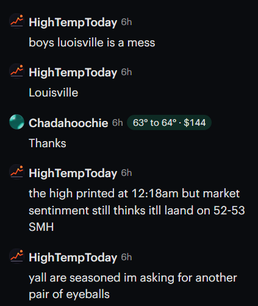
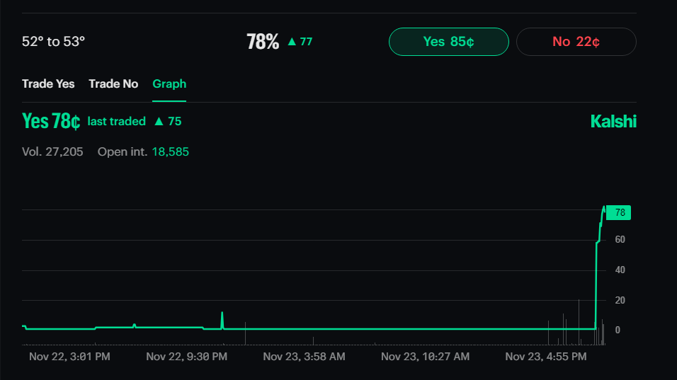
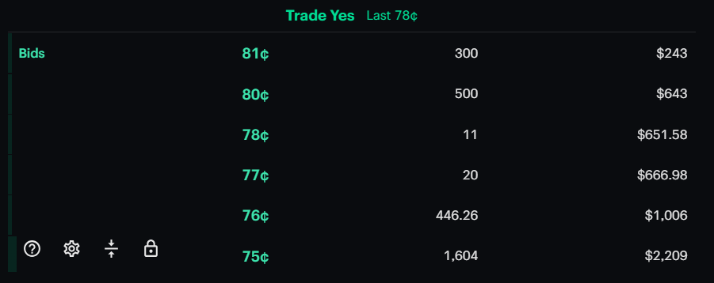
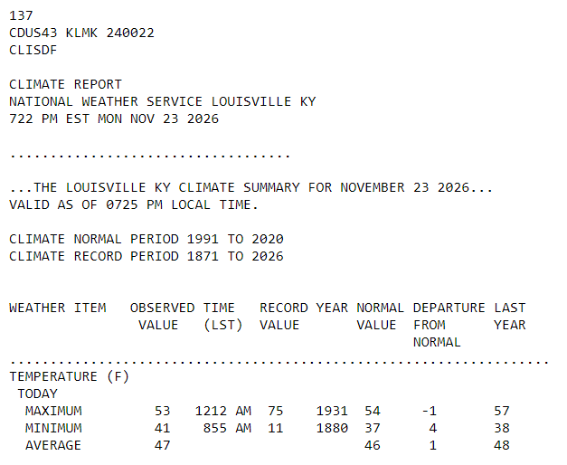
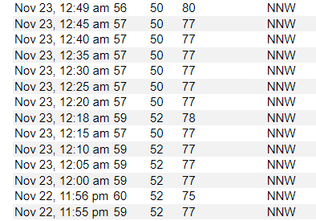
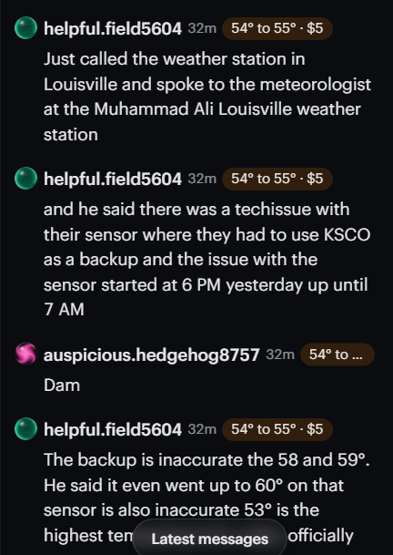
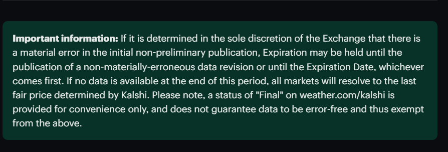

THE LOUISVILLE 59 DEBACLE
Louisville's high happened at 12:18 in the morning. The market traded all day like it hadn't — and then the official print agreed with the market. A story about timestamps, data sources, and what actually settles.
- Louisville's daily high was 59.00°F, printed at 12:18 AM ahead of a cold front. The temperature fell for the rest of the day. A daily high can't un-happen — but a market can spend all day acting like it might.
- Three wrong numbers split the market three ways: last night's 60.1°F leaking into "today," the afternoon's low-50s mistaken for a high still to come, and 53 — the real high at a different airport (Bowman Field).
- The official CLI printed 53 at "12:12 AM." The station's own record shows 59 at 12:00, 12:05, 12:10 and 12:18 AM. A maximum beaten by the prints on both sides of its own timestamp was never computed from that station's data.
- The contract settles on The Weather Company's final value for this station, names no backup station, and allows expiration to be held for a corrected revision. The market had still not settled when this posted — and I didn't wait for it. I cashed out late at 2 cents. Tomorrow's final value decides what that exit cost me, or saved me.
THE HIGH WAS ALREADY IN THE BOOKS
The high was already in the books before most of the market woke up. Monday was a frontal day in Louisville. The warm air got its moment in early — 59.00 degrees at 12:18 in the morning — and then the front came through and the temperature fell all day. By the afternoon the city was sitting in the low 50s and dropping. That's the whole weather story. Everything else that happened Monday happened because a lot of people never saw that first line.
I found it the way I find most things now: in the Pro Command Center, scanning the city cards for a reasonably priced late entry — a market getting ready to peak where the ask still made sense. Louisville looked wrong the second I saw it. The market had it still coming, with 52 to 53 degrees as the favorite — like the peak hadn't happened yet. I went back to the Command Center and looked at the data. Louisville had already printed its high. 59 degrees, at 12:18 AM. You could see the whole day on the curve: the spike at midnight, the front, and then a long cool-off that never looked back.
I'm about to make some money, I'm thinking to myself.
I went over to Kalshi to look it over and make sure. Sure enough: 58 to 59, sitting at about a 34% implied probability — 35 cents. Before I put a dollar in, we verified it to the tenth of a degree against the transmitted station record, two independent archives. 59.00 at 12:18 AM. Not 59 and change — 59.00, a full half-degree and more below the line where it would have rounded to 60. I got in at 4:28 PM: 35 cents, ten dollars.
And then I looked around and thought — something seems off. Why are there so many brackets still open?

The chat room was going crazy. I went over to San Antonio's market — seasoned traders over there — and asked for another pair of eyeballs, because I wanted somebody to tell me what I was missing. Nobody could. I messaged my friend Weather Desk Dave: buddy, you might want to get on this. Something's up. I think there's a glitch in the system, I don't know — but the high already peaked at 12:18 AM this morning. You might want to get in on it. He did.
THREE WRONG NUMBERS
Over the next 90 minutes, the debate started — what's actually going on here? And I want to give the chat room its credit: there were people in there doing hard work and deep research, pulling records, checking stations. Scrambling between educating people, plugging HighTempToday when I could, doing due diligence — it was chaos. But as the research piled up, the picture got clear. The market wasn't trading one wrong number. It was trading three of them.
Wrong number one: 60. Sunday night, on its way down from a 73-degree day, Louisville printed 60.1 degrees — the last of them at 8:29 PM Sunday. Those prints leaked into Monday's data. Feeds that should have started the day clean carried yesterday's warmth forward, and the DSM — the daily summary a lot of traders treat as gospel — said 60. So one camp held 60 and above all day, trading a number that belonged to the night before.
Wrong number two: the temperature outside the window. The other camp looked at Louisville sitting in the low 50s all afternoon and priced it like the high was still being decided — like the day was a climb that hadn't topped out. On a frontal day, the high can be the first thing that happens. It was. The current temperature is not the daily high, and on Monday it wasn't close.
Wrong number three: 53. That one took the longest to run down, and it's the one that mattered. 53 degrees was a real high on Monday — at Bowman Field, Louisville's other airport, which never caught the midnight warm spike and topped out at 53.06 at 12:07 AM. People were reading the wrong airport's day and trading it as this station's. The market that settles Louisville settles on one station — the one at the international airport — and its record said 59 before 1 AM.
I posted it in the room at the time, and I'll stand on the exact words: "Room's split between two wrong reads: the leaked 60.1 from last night, and folks pricing the current low-50s like it's the high. KSDF printed 59.00 at 12:18 AM before the front hit. A daily high can't un-happen — yet 52-53 is bid 59c."
The room didn't buy it. 52 to 53 — a bracket the station had already beaten by six degrees before 1 AM — got bid up to 83 cents at the peak of it. People were paying 83 to make 17 on a number that had been impossible since breakfast. My 58-59, the bracket the station record supported, got marked down to about 14 cents. On paper I was down 60%. I added instead — twice, at 5:47 and 6:05, as the price collapsed — because the record doesn't move when a room panics. By the end I held 181.95 shares at $23.98 all-in.


Honesty break, because this site does those: the leak fooled our own desk's flags too. Our paper system's intraday marks carried the same bad print — one book sat "locked" on 60-plus, another sat "dead" on the bracket that was actually right. What saved the record is the rule we grade by: transmitted prints are flags, the official report arbitrates. It's the same lesson, learned from the inside.
THE PRINT
Around 7 o'clock we all knew the climate report was coming — the CLI for Louisville posts around 7:30. It posted at 7:22 PM. With proof in hand — the station's transmitted record, verified to the tenth — I watched the official print land:
MAXIMUM: 53. At 12:12 AM.

I couldn't believe it. So we went to the source: the National Weather Service's own observation history for the station. Here is what Louisville's station actually transmitted around midnight:

59 at 12:00. 59 at 12:05. 59 at 12:10 — two minutes before the CLI says the day peaked at 53. 59 again at 12:18. A daily maximum is the highest value in the set. The CLI's "maximum" is beaten by the readings on both sides of its own timestamp, at the same station, in the same agency's own table. 53 does appear in Louisville's record on Monday — in the afternoon, on the way down, hours after the time the report stamps it. A maximum that looks like that wasn't computed wrong. It was never computed from this station's data at all. And its value and time — 53, just after midnight — match Bowman Field's register, the other airport, to within a tenth of a degree and a few minutes.
THE SENSOR STORY
Then the explanation started moving. On X, word came from NWS Louisville's account that there had been a sensor issue. Here's what the record actually shows about that, because we checked it the same night: some of the station's reports carry a "$" — a maintenance-check flag. It's generic. It lights up when any subsystem wants a technician's attention, it names no sensor, and it can stay on for weeks. The temperature record itself never broke: the station filed 26 reports on Monday, every one with complete temperature data, no gap longer than an hour, and the curve through the front is smooth — 60.1, 59.0, 55.9, 55.0, 54.0. A failed temperature sensor leaves holes or frozen values. This record has neither. And if the data had truly been missing, the climate report has a way to say so — it prints a missing-data flag. It doesn't. It prints a precise 53 at a precise minute that matches a different airport.
And credit where it's due: late in the night, one trader in that room did what almost nobody in a chat room ever does — he picked up the phone and called the Louisville weather office, and came back and reported what he was told. His name in the room is helpful.field5604, and this post is naming him because the legwork deserves it: a sensor issue, he was told, a backup sensor at another field, and 53 as the official high. That's his report of the call, in his words:

Whether the office described an internal problem the public record doesn't show, or the story got garbled between the phone and the chat, I can't verify — and the contract names no backup station either way. But the man went to the source while the rest of the room was trading screenshots. That instinct is the whole ballgame in these markets, and it belongs in this story with his name on it.
WHAT THE CONTRACT SAYS
Which brings it to the only question that pays anybody: what does the contract say? Louisville's market settles on the maximum temperature for the station's climate report as published by The Weather Company. Not a backup airport. Not a summary message. Not a social post. And the rules carry a clause written for exactly this night:

At 7:20 PM — two minutes before the print — I told the room "I'm calling 59," and put the number and the timestamp on the record. The station's record says 59. The first official print says 53. As this post goes up, the market still hasn't settled — one of those numbers is the settlement, and it isn't decided yet. My own ending came before the market's. It's at the bottom of this post, where it belongs.
THE LESSON
The lesson is the whole reason this site exists. What Monday actually exposed, trader after trader, was three gaps — and they're the same three gaps I see every week:
One: not knowing which station settles. Not the city. Not the airport across town. The station named in the rules.
Two: not knowing where the temperature data actually lives — the transmitted record, timestamps and all — instead of a summary, a screenshot, or whatever a feed carried over from last night.
Three: not knowing how Kalshi officially settles — which publication, whose final value, and what the rules say happens when the first print is wrong.
Get those three right and Monday wasn't chaos. It was a 35-cent bracket with the answer already printed. That's what HighTempToday is here to be: the educational cornerstone for people in these markets. The Pro Command Center — the tool that showed me 59 sitting in the books while the market argued — is free right now, in beta, because I'd rather people learn this stuff here than pay tuition to a confused market.
Shout-out to Weather Desk Dave — a real trader and a real user of this site — for keeping me motivated to keep pursuing this and to put out good content. He got in Monday too, on the same record. And a shout-out to the people in that chat room doing the hard research under pressure. Some of them landed on the wrong number. The ones who kept pulling records were doing it right.
Real content. Real data. Not AI slop. Timestamps for everything.
MY ENDING
My ending, since this site publishes those too. I held the position through the print, through the sensor story, through the whole evening of watching a market price a number the station never printed. At 11:26 PM, I cashed out — all 181.95 shares, at 2 cents. After the fee, $3.39 came back on $23.98 that went in. Net on the trade: minus $20.59, and no position left to settle.
Tomorrow, the final value lands, and it will grade that exit like it grades everything else. If it says 59 — if the correction comes — then I left $181.95 on the table at 2 cents, and I'll find out I could have won 180-plus dollars by doing nothing. If it says 53, then the 2 cents was salvage — the only money that bracket was ever going to pay anybody on my side. We'll find out tomorrow. This post will be updated when it lands, the same way we update everything: in the open, with the number attached.
I was right about the temperature. I have the timestamps to prove it. Whether being right pays is a different department — and on Monday night in Louisville, that department was a mess.
THE NUMBERS
| The print | 59.00°F at 12:18 AM EST — verified to the tenth against the transmitted record, two archives |
| The leak | 60.1°F, last printed Nov 22 at 8:29 PM — Sunday's cooldown, traded as Monday's high |
| The wrong airport | Bowman Field (KLOU) — high 53.06°F at 12:07 AM |
| The official print | CLI issued 7:22 PM EST — maximum 53 at 12:12 AM, matching no KSDF observation |
| My entry | 181.95 shares of 58–59 across three buys (4:28 / 5:47 / 6:05 PM) — $23.98 all-in |
| Worst mark | ~14¢ mid-chaos — down about 60% on paper |
| My exit | Sold all 181.95 at 2¢, 11:26 PM — $3.39 back after fees; net −$20.59 |
| If 59 is final | The position would have paid $181.95 (net +$157.97 held to settlement) |
| Settlement | The Weather Company's final CLISDF value — still open when this posted |
— Buzz
Follow along on Instagram: @hightemptoday — the day's winner cards land there first. The full record, losers included, lives here in the journal.